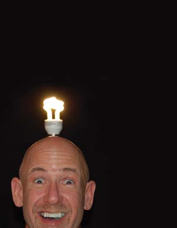

Bright Ideas For Home Lighting
Better lights are the No. 1 way to save money and energy. Why? Because changing your light bulbs is an easy, effective step you can take to reduce your electric bill and the greenhouse gases emitted by creating electricity.
By Megan Phelps
April/May 2007
If you’re ready for a simple way to save energy, think light bulbs. To start with, choosing a compact fluorescent (CFL) is a smart move because these bulbs use much less electricity than old-fashioned incandes cents. Not only will choosing a CFL save you about $30 in electric bills over the life of each bulb, it also will help you do your part to reduce emissions of greenhouse gases and other air pollutants.
But there are other options to consider. In fact, there are a growing number of ways you can save electricity and make your home more comfortable by choosing the right lights. Just a few of the most promising options include new varieties of CFLs and fluorescent lights, new superefficient light-emitting diode (LED) bulbs; and simple strategies for using less electricity and bringing in more natural light. Here’s how to start finding the best lights for your home.
THE POWER OF FLUORESCENT LIGHTS
One energy-efficient option is standard fluorescent lights: These familiar long, thin tubes illuminate large spaces, from kitchens and garages to classrooms and office buildings. Fluores cents are more efficient than incandescent bulbs, which produce light by heating a metal filament, and therefore waste 90 percent of their energy as heat. Instead, fluorescent bulbs produce light through a chemical reaction. But fluores cents didn’t fit into most home light fixtures until 1979, when manufacturers added a twist.
The compact fluorescent works much the same way as a standard fluorescent light, but the thin tube curves into a round bulb shape that fits neatly into most lamps. Commonly known as CFLs, they are much more efficient than incandescent bulbs.
“They use two-thirds less energy to provide the same amount of light, and they last a long time, up to 10 times longer than incandes cents,” says Wendy Reed, communications manager for the U.S. government’s Energy Star program, which promotes energy efficiency. The Energy Star program also estimates that replacing a single incandescent bulb with a CFL prevents nearly 500 pounds of greenhouse gas emissions.
And the savings start right away. Gary Reysa, a retired engineer and the author of our recent cover story “Build a Simple Solar Heater” (December/January 2007), calculated the money and energy he saved at home by switching to compact fluorescent light bulbs. When he bought 29 compact fluores cents, he spent a total of $50 on bulbs and expects to save $1,784 over 10 years. The cost of the bulbs (usually about $2 to $3 for a standard CFL) would have been a bit higher, but his local utility offered a rebate. In fact, many electric utilities offer rebates on these bulbs, so check with yours for details.
So far, only about 5 percent of the light bulbs Americans purchase are CFLs. There are several reasons people have been reluctant to make the switch. One is the higher initial cost of the bulb. Another is historical problems with quality. Early CFLs tended to flicker when you hit the light switch, with a brief delay before they came on. The quality of the light could also make colors appear washed out.
However, new fluores cents and CFLs don’t usually have these problems, says Alex Wilson, executive editor of Environmental Building News and author of Your Green Home. He explains that their light quality is higher today, and the technology has improved. “Today’s fluores cents are produced with electronic ballasts, so they’re not going to flicker and hum as they would with the older magnetic ballasts,” he says.
If you have older fluorescent lights, replacing the ballasts can increase their quality and efficiency. (See photo.) CFLs also have improved significantly, even over the last two years. Reed says the quality of light from a CFL now is the same as it would be from an incandescent. She encourages people who haven’t tried a CFL recently to take another look.
“I’ve seen not just an increase in the quality, but a huge increase in the variety,” Reed says. CFLs have been developed to work with recessed fixtures, dimmer switches, chandelier lights and outdoor lighting - even bug lights.
Not all CFLs are manufactured to the same standards, so to get the best bulb, start by looking for an Energy Star label. Wilson says there’s a surprising variation in the bulbs’ lifetime, because the technology is simply more complicated than incandescent bulbs. In the Energy Star tests, a certain percentage of the bulbs must last a particular length of time. “It’s a pretty good assurance that you’re getting a good quality product,” he says.
CONCERNS ABOUT MERCURY
If there’s one lingering concern about fluores cents and compact fluores cents, it’s mercury pollution. The chemical reaction that produces fluorescent light requires a small amount of mercury inside the bulb. Mercury is a neurotoxin, and many people are understandably reluctant to introduce it into their homes. To help address these concerns, the Energy Star program has posted a fact sheet on its Web site.
Most experts say not to worry about the health effects of exposure to the mercury in a compact fluorescent, even if the bulb breaks. As a frame of reference, one CFL contains 4 milligrams of mercury, just a fraction of the 500 milligrams found in old mercury thermometers, according to the U.S. Environmental Protection Agency (EPA).
In fact, using compact fluores cents actually reduces mercury pollution, because the main source of mercury pollution is coal-burning power plants - the most common source of electricity in the United States. According to the EPA, the power used during the life of an incandescent bulb breaks down to about 10 milligrams of mercury pollution, compared to only 2.4 milligrams to operate a CFL for the same length of time.
“Consumers should know that the mercury in CFLs is not going to be detrimental to them in their home,” Reed says. “But it’s important to responsibly dispose of them, as you would any product that contains mercury - batteries, old thermometers and thermostats.”
Wilson has reached the same conclusion: “The take-home message is that when fluores cents have ceased to work properly, they shouldn’t just be thrown in the trash; you should dispose of them through your local solid waste agency.”
If you’re not sure whom to contact, a good resource for local recycling and disposal information is Earth 911 [(800) CLEAN-UP]. The point is to keep fluores cents out of landfills, where there’s always a chance that some of the mercury could eventually leak out. As more people start using compact fluores cents, the collective mercury could become more of a concern. But the pros outweigh the cons, Reed says. “It’s the right thing to do for the environment. It’s much better to use CFLs, because they do reduce the amount of mercury in our air and reduce greenhouse gas emissions.”
Reed talks to many people who say they’re waiting for their incandes cents to burn out before replacing them, because they don’t want to throw away a working light bulb. But she thinks it makes more sense to switch now.
“You can start saving energy now, or six months from now, and either way the incandescent bulb is going to end up in the trash,” she says. “This is the easiest way you can start making a difference today.”
Wilson has used nothing but compact fluores cents in his home for the last 15 years. He says that despite promising new technologies, for most uses, CFLs are still the best choice, and using them to replace incandescent lights is definitely a good move. “It’s one of the easiest ways to make a difference in your carbon footprint. It’s a significant step.”
How much of a difference does it make? The Energy Star program estimates that if every American household replaced just one incandescent with a CFL, it would save enough electricity to light 2.5 million homes for a year. It would also prevent as much greenhouse gas emissions as taking 800,000 cars off the road.
THE POTENTIAL OF LEDs
Most of the promising research in lighting is related to light-emitting diodes, or LED lights. They’re more efficient than incandes cents, because the bulbs don’t use heat to produce light. And unlike fluorescent lights, they don’t contain any mercury. Instead, LEDs are made with a semiconductor material that produces photons when electricity passes through it. LEDs are very good at focusing light exactly where it’s needed, plus, they produce light in a variety of colors and last a long time.
But for most home lighting, LEDs are still not as energy-efficient as compact fluores cents, usually not bright enough and not yet as good at producing the white light we use in our homes.
“LEDs have improved dramatically in the last five years or so, but efficiency is still well below that of fluorescent lighting,” Wilson says. He says that LEDs have promise of getting to that point, but while today’s best LEDs are much more efficient than incandes cents, they are still not as efficient as CFLs.
At the same time, Wilson says that for some applications, LEDs are definitely the most efficient lights. That’s because they can efficiently produce brightly colored, low-wattage light: LEDs are now frequently found in traffic signals, building exit signs and appliances, and are even available as Christmas tree lights.
The future of LEDs is bright - significant research is focused on LEDs for general-purpose lighting, and the technology continues to improve. Environmental Building News recognized an LED luminaire as one of its top 10 green building products of the year for 2005. Permlite sells these luminaires for about $160. “For most applications fluores cents are still the way to go, but I would suggest keeping an eye on LED lighting,” Wilson says.
SMART LIGHTING STRATEGIES
Besides the light bulbs you choose, several other ideas for home lighting can help you save money and energy.
Use task lighting. Some tasks, especially reading and sewing, require bright light. But in many areas of your home, lower-wattage bulbs may work just as well, such as for ambient lighting in the kitchen. For rooms where you want different levels of light at different times, light fixtures with dimmer settings can be a good option. Not all compact fluores cents work with dimmer switches, so check the packaging carefully.
Put your home on a “lighting diet.” Paul Scheckel, a home energy consultant and author of The Home Energy Diet, has many tips for cutting the amount of energy you use, including tips for home lighting. Although his simplest advice, “one person, one light,” is a good goal, he also suggests other easy steps, including using low-wattage bulbs in kitchen under-counter lights, getting more light from low-wattage bulbs by using light-colored lamp shades, avoiding the use of halogen floor lamps, and turning off the lights when you leave a room (as well as fining family members who don’t).
If you’ve heard conflicting advice about when to turn off the lights, you’re not alone. One source of confusion is that there are two separate issues to consider, saving money and saving energy. According to the U.S. government’s Office of Energy Efficiency and Renewable Energy (EERE), every time you turn off fluorescent lights for more than five seconds you save energy. However, turning lights on and off reduces their life span. If your main goal is to save money, EERE recommends leaving fluorescent lights on for up to 15 minutes if you’re planning to go back to a room. Incandescent lights are less expensive to replace and burn more energy when they’re on, so turn them off every time you leave a room to save both money and energy.
Choose renewable energy. To further reduce your fossil fuel consumption, you can choose several different strategies. One option is to purchase your electricity from renewable sources (for more information, see “Vote with Your Dollars: Opt for Green Energy” (April/May 2007). Another is to install a home-scale wind turbine or solar panels to produce electricity for your home. Either way, you’ll also definitely want energy-efficient lights, because the less electricity it takes to power your home, the smaller the system you’ll need to purchase. (See “Easy DIY Solar Lighting,” April/May 2007, for more on lighting your home with solar energy.)
You also can use solar power for smaller applications, including outdoor lights. Solar-powered security lights are widely available, and most cost only $50 to $100. Even less expensive are solar-powered garden accent lights. You can find a set for less than $50.
THE ALLURE OF NATURAL LIGHT
For the ultimate in efficient, natural and appealing lighting, you can’t beat daylight. Some studies have found that people who work in rooms with natural light are more productive.
To substitute for daylight, some people turn to full-spectrum lights, which are designed to mimic the color spectrum of sunlight. However, many consider them a poor substitute. “A lot of people think they want full-spectrum, and then they put it in their homes and they don’t like the quality of the light - it’s a very bluish light; it feels very cool,” Wilson says. If you’re interested in full-spectrum lights as a treatment for seasonal affective disorder (SAD), be sure to consult a physician. Light therapy is more complicated than changing your overhead light bulbs, and this treatment is not appropriate for everyone.
Exposure to sunlight is important to our health, because it allows our skin to synthesize vitamin D, but it has to be direct sun - even sunlight through window glass doesn’t do the trick. However, bringing more sunlight into a building has other benefits.
If there’s enough sunlight to allow us to leave the electric lights off, it saves electricity. It also makes a building more comfortable. George Beeler, an architect with AIM Associates, works extensively with daylighting: strategies for bringing more natural light into buildings.
“Almost every client I have says they want a building to be light and airy. That’s what you get with daylighting,” he says. It’s also a simple way we can feel more in touch with the outdoors. “Daylight is in a sense alive, because we are aware of the fact that the weather is changing outside and what time of day it is,” he says.
Strategies for daylighting can be surprisingly complex. That’s because the goal is to let in natural light, but to prevent glare. In summer, you also want to keep out additional heat. Factors involved include your latitude, shading of the building and window height. But some strategies are easy to adopt at home.
“Something simple a person can do to start enjoying daylighting is to move their reading or work space closer to the window,” Beeler says. It’s worth taking some time adjusting the furniture or shades to make the workspace comfortable. Painting a room a light, more reflective color can help improve the natural light - especially important with the ceiling, which will reflect more light the closer it is to pure white.
If you’re remodeling a house, one option is to put in taller windows, or to add skylights. Another option is solar-tube lighting. These are small skylights, paired with long reflective tubes that can bring sunlight deep into a home. However, before you purchase any of these products, do your research. An improperly installed skylight or window can allow heat to leak out of your home. And unless you correctly size and position a solar tube, it may not provide enough light to meet your needs.
With a little planning, a combination of energy-efficient light bulbs and natural lighting will not only save energy, it will also make your home more comfortable. “In our modern lives we spend so much of our time indoors,” Beeler says. “We didn’t evolve that way. To me, there’s a real incentive to make it a better environment for everyone.”
HOW MUCH CASH DO LIGHT BULBS BURN?
MORE IDEAS FOR ENERGY SAVINGS
SOURCES
-- Megan Phelps is the senior associate editor at Mother Earth News. She's so fanatical about CFLs, she'll replace your incandescent light bulbs when you're not looking.
|
 MATTHEW T. STALLBAUMER What a bright idea! It’s true, changing your light bulbs is an easy effective step you can take to save energy and combat climate change. |
MATTHEW T. STALLBAUMER Replacing just one incandescent light bulb with a compact fluorescent will save you about $30 in electric bills over the life of the bulb and prevent about 500 pounds of greenhouse gas emissions. |
ERIKA BENTSON Compact fluorescent light bulbs now come in many varieties, such as this bulb for a recessed fixture. |
 ERIKA BENTSON The lights of the future may be energy-efficient light-emitting diodes (LEDs). |
MATTHEW T. STALLBAUMER Celebrate the savings! Changing to better fluorescent lights saved 25 percent on our electric bill, and gave us 25 percent more light at the offices of Mother Earth News. |
RICK WETHERBEE Everyone loves natural light, and it saves energy, too! A few simple strategies, such as choosing lighter paint colors, can help you maximize natural light in your home. |
|
|
|
|